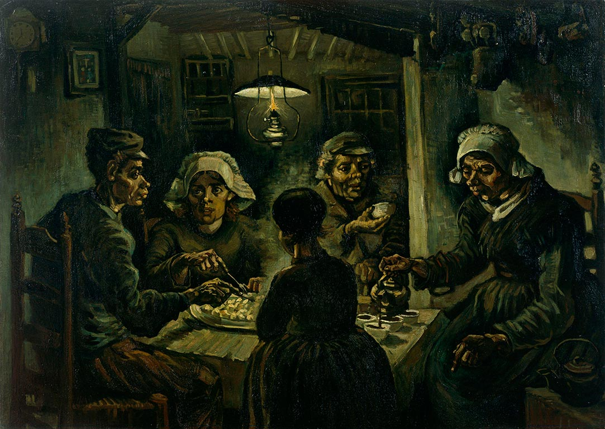

LOS COMEDORES DE PATATAS

En 1883 Vincent, que era todavía un principiante en esto de la pintura, se fue a vivir con su
familia en Nuenen y habitó codo con codo con la pequeña comunidad de campesinos de este pueblo.
Es entonces cuando el pintor, influenciado sobre todo por Millet y la oscuridad del barroco holandés,
decide desarrollar su particular realismo, inspirado en los duros trabajos de estas gentes.
Según Van Gogh, los campesinos debían pintarse con los mismos tonos de la tierra que cultivaban.
Es así que los tierras y los tonos oscuros dominan este cuadro. Un trabajo muy orgánico, casi como
los colores de una patata recién cosechada, sin lavar.
De esta manera la patata está muy presente en el lienzo, no sólo físicamente, sino en todo el concepto,
y los campesinos representados en un momento de serenidad familiar tras un duro día de trabajo, se
alimentan del fruto de este trabajo, algo que Van Gogh consideraba la cosa más noble del mundo.
Pese a ser un cuadro militantemente realista, el artista no representa a estas figuras con un
naturalismo fotográfico, sino que opta, como lo haría su adorado Daumier, por la caricaturización
de sus fisionomías.
Así, pensaba él, podía transmitir mejor los rasgos salvajes y primitivos del campesinado, es decir,
plasmar su esencia genuina, alejada de cualquier contaminación de la cultura burguesa.
Los comedores de patatas es considerada la primera gran obra maestra del pintor, y todavía
está muy alejada de lo que vendría después, pero en ella ya vemos la apuesta de Van Gogh por
la expresividad que sería su seña de identidad.